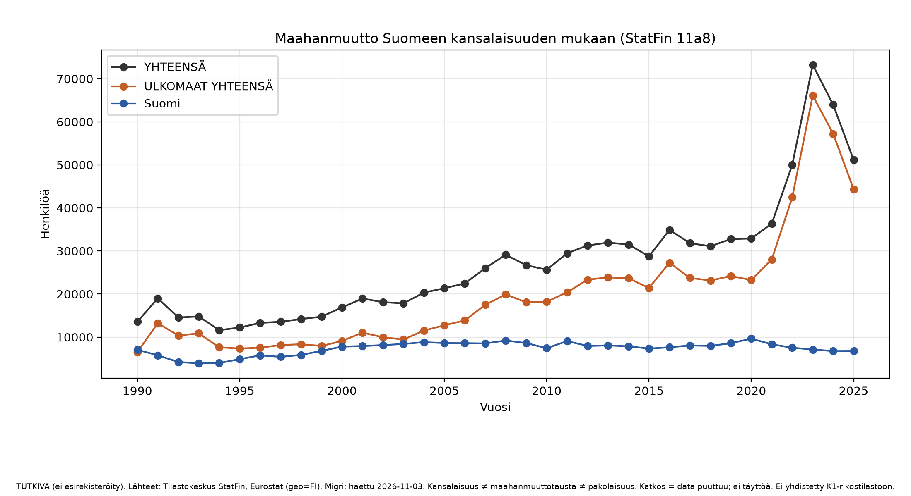
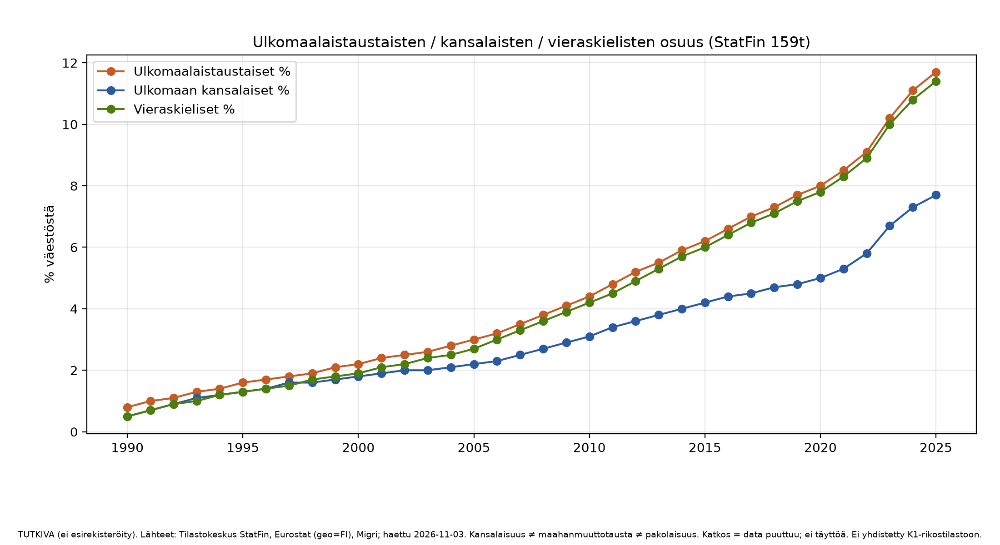
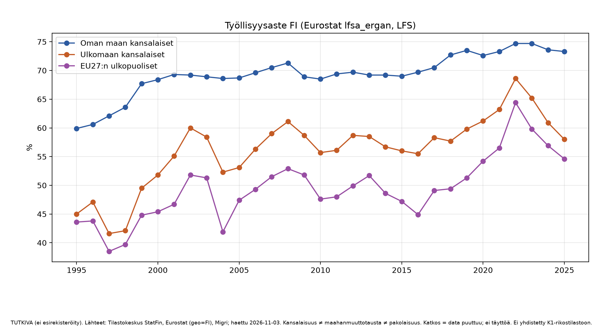
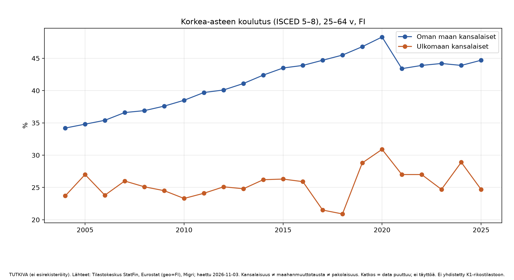
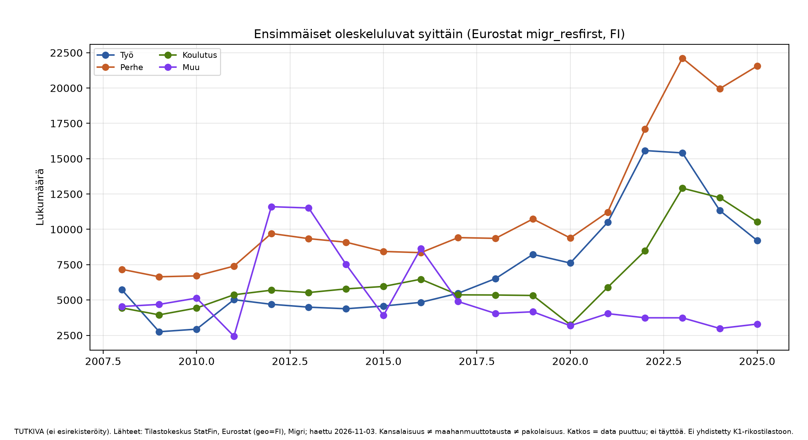
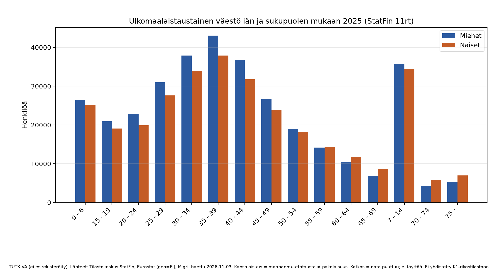

TUTKIVA (ei esirekisteröity). Ei yhdistetty K1-rikostilastoon.
Raportti: Suomi maahanmuuton avoin tietopaneeli (TUTKIVA)
Ei esirekisteröity. Ei yhdistetty K1-rikostilastoon. Vain Suomi.
Haettu 2026-11-03. Puuttuva = tyhjä / `saatavuus=ei`, ei täyttöä.
**Tulosluvut erillään tulkinnasta** (osio 8).
1. Peitto
Lähde: `output/tables/fi_migr/fi_migr_peitto.csv`.
| aihe | lähde | saatavuus | vuodet (min–max) |
|---|---|---|---|
| tulot_maahanmuutto | StatFin 11a8 | kyllä | 1990–2025 |
| ika_sukupuoli_syntypera | StatFin 11rt | kyllä | 2000–2025 |
| tyollisyys | Eurostat LFS FI | kyllä | 1995–2025 |
| koulutus | Eurostat edat_lfs_9911 FI | kyllä | 2004–2025 |
| oleskeluluvat | Eurostat migr_res* FI | kyllä | 2008–2025 |
| kiintiopakolaiset (saapuneet) | Migri HTML | kyllä | 2017–2025 |
| kieli_oppimisaika_kk | — | **ei** | — |
| Eurostat migr_imm* / migr_asy* (FI-suodatus) | probe | **ei** (HTTP 413) | — |
| Kotoutumisen indikaattorit PxWeb | probe | **ei** (ei vastannut) | — |
2. Maahanmuutto Suomeen (StatFin 11a8)
Yksikkö: henkilöä / vuosi. Kansalaisuus: YHTEENSÄ, Suomi, ULKOMAAT YHTEENSÄ.
Ulkomaan kansalaisten maahanmuutto (valitut vuodet):
| vuosi | maahanmuutto (ULKOMAAT YHTEENSÄ) |
|---:|---:|
| 2020 | 23260 |
| 2021 | 28043 |
| 2022 | 42470 |
| 2023 | 66113 |
| 2024 | 57215 |
| 2025 | 44331 |
Kaavio: `output/figures/fi_migr/01_maahanmuutto_vuosi.png`.
3. Väestöosuudet (StatFin 159t)
Ulkomaalaistaustaisten / ulkomaan kansalaisten / vieraskielisten osuudet koko maan väestöstä.
Kaavio: `02_vaesto_osuudet.png`. Taulu: `fi_migr_vaesto_osuudet.csv`.
4. Ikä × sukupuoli × syntyperä (StatFin 11rt)
Ulkomaalaistaustainen väestö ikäryhmittäin ja sukupuolittain (koko maa).
Kaavio (viimeisin vuosi): `06_ika_sukupuoli.png`. Taulu: `fi_migr_ika_sukupuoli.csv`.
5. Työllisyys (Eurostat lfsa_ergan, geo=FI)
LFS-otanta. Kansalaisuusluokat NAT/FOR/… ≠ maahanmuuttotausta.
Esim. 2024 työllisyysaste (%): NAT 73,6; FOR 60,9; NEU27_2020_FOR 56,9.
Kaavio: `03_tyollisyysaste.png`.
6. Koulutus (Eurostat edat_lfs_9911, geo=FI)
ISCED 5–8 osuus 25–64-vuotiaista kansalaisuusryhmittäin.
Kaavio: `04_koulutus_korkea.png`.
7. Oleskeluluvat ja kiintiö
Ensimmäiset oleskeluluvat syittäin (Eurostat migr_resfirst, kolmansien maiden kansalaiset): `05_oleskeluluvat.png`, `fi_migr_luvat.csv`.
Kiintiöpakolaiset (Migri):
- **Asettaja:** Suomen valtioneuvosto (esitys) / eduskunta (päätös talousarvion / pakolaiskiintiön yhteydessä). UNHCR ehdottaa henkilöitä, ei aseta Suomen vuosikiintiötä. (`fi_migr_kiintio_meta.csv`)
- **Saapuneet** 2017–2025 poimittu Migri-sivulta (`fi_migr_kiintio.csv`). Esim. 2025: 621; 2024: 808; 2023: 1332.
- HTML-poiminnan “Yhteensä / valitut” -luvut ovat TUTKIVA; osa vuosista puuttuu tai vaatii manuaalisen tarkistuksen lähteestä.
8. Kielitaito / oppimisaika
`kieli_oppimisaika_kk`: **ei saatavilla** avoimena aikasarjana (ei estimoida).
Kotoutumisen indikaattorien PxWeb ei vastannut probe:ssa → kielitaidon taso × maassaoloaika ei haettu.
9. Tulkinta ja rajat
- Luvut ovat lähteiden määritelmien mukaisia. StatFin-syntyperä ≠ Eurostat-kansalaisuus ≠ pakolaisuus.
- Migri- ja Eurostat-yksiköitä ei ole summattu samaan “kokonaisfaktalukuun”.
- HTTP 413 esti Eurostatin maahanmuutto-/turvapaikkasarjojen suoran FI-haun; tulovirta perustuu StatFiniin.
- Ei politiikkajohtopäätöstä kiintiön koosta. Ei K1-yhdistämistä.
Kaaviot






Peitto
| aihe | lahde | vuosi_min | vuosi_max | n_rivia | saatavuus |
|---|---|---|---|---|---|
| tulot_maahanmuutto | StatFin 11a8 | 1990.0 | 2025.0 | 108 | kylla |
| ika_sukupuoli_syntypera | StatFin 11rt | 2000.0 | 2025.0 | 2496 | kylla |
| tyollisyys | Eurostat LFS | 1995.0 | 2025.0 | 310 | kylla |
| koulutus | Eurostat edat_lfs_9911 | 2004.0 | 2025.0 | 318 | kylla |
| oleskeluluvat | Eurostat migr_res* | 2008.0 | 2025.0 | 216 | kylla |
| kiintiopakolaiset | Migri | 2017.0 | 2025.0 | 9 | kylla |
| kieli_oppimisaika | — | NaN | NaN | 0 | ei |
CSV-tiedostot tässä kansiossa. Lähteet: FI_MIGR_DATA_SOURCES.md.